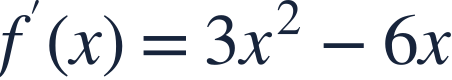
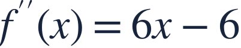
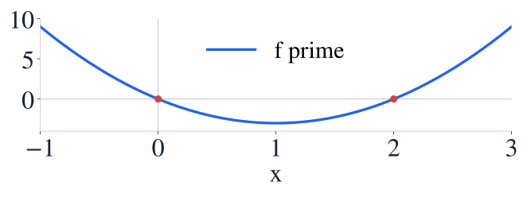
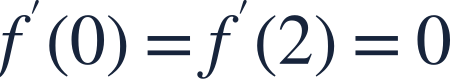

Connecting derivative graphs
함수와 도함수 그래프

A graph of f′ records slopes of f, and its own slope records f″.
f′의 그래프 높이는 f의 기울기이고, 그 그래프의 기울기는 f″입니다.

A graph of f′ records slopes of f, and its own slope records f″.
f′의 그래프 높이는 f의 기울기이고, 그 그래프의 기울기는 f″입니다.

Read the derivative graph’s height and slope as different pieces of information.
도함수 그래프의 높이와 기울기를 서로 다른 정보로 읽으세요.

At a zero of f′, a nonzero second derivative classifies the stationary point.
f′이 0인 점에서 f″이 0이 아니면 정지점을 판정할 수 있습니다.

The derivative graph meets the axis at two stationary inputs.
도함수 그래프가 축과 만나는 두 입력이 정지점 후보입니다.
At 0, the slope of f is decreasing through zero: a local maximum.
0에서는 f의 기울기가 감소하며 0을 지나므로 국소최대입니다.
At 2, the slope increases through zero: a local minimum.
2에서는 기울기가 증가하며 0을 지나므로 국소최소입니다.
If f″(c)=0, the second derivative test is inconclusive; use another test.
f″(c)=0이면 이계도함수 판정법으로 결론을 내릴 수 없습니다.

What does the second derivative test say? What is actually true?
이계도함수 판정법의 결과와 실제 극값을 구별하세요.